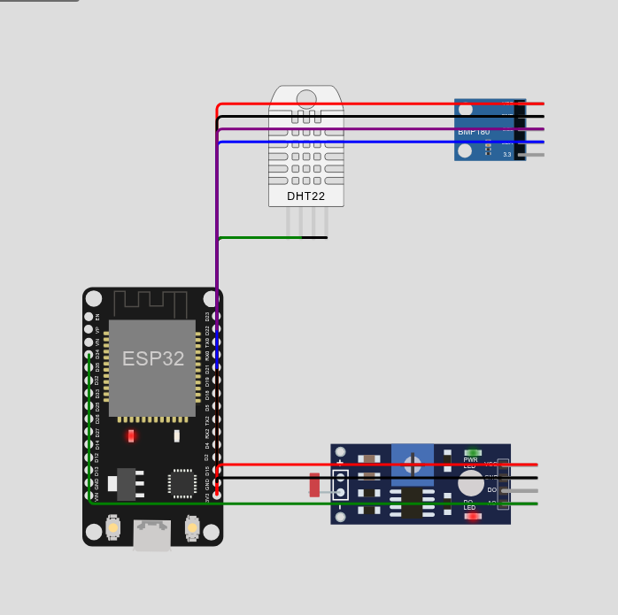
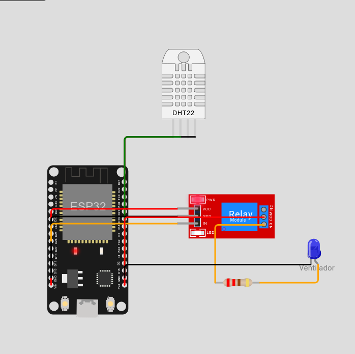
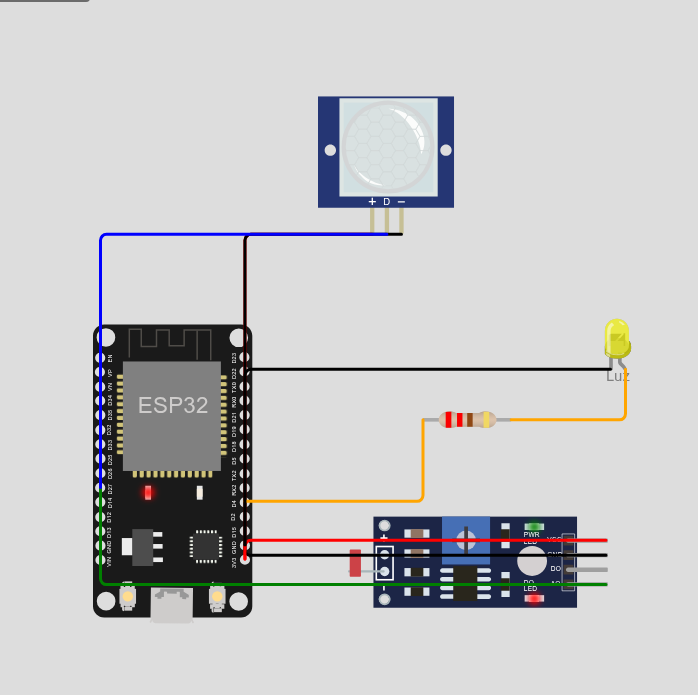
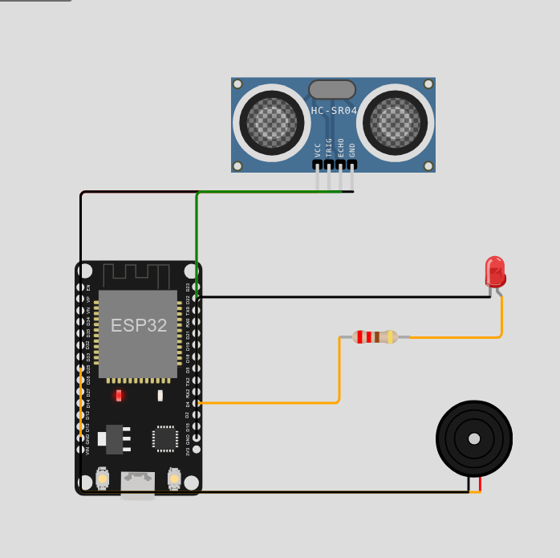

Los cuatro prototipos
Piezas, conexiones y campos de ThingSpeak de cada prototipo. Los campos van en este orden: así se califica.
Prototipo 1 · Estación ambiental
Problema: ¿Cómo cambian el calor, la humedad y la luz del aula durante el día?

| Pieza | Conexión | Señal |
|---|---|---|
| DHT22 | VCC → 3V3 · GND → GND.1 · SDA → D15 | digital |
| BMP180 | VCC → 3V3 · GND → GND.1 · SDA → D21 · SCL → D22 | I2C |
| Fotorresistencia (LDR) | VCC → 3V3 · GND → GND.1 · AO → D34 | analógica |
ThingSpeak · Estación CL#-####: field1 temperatura (°C) · field2 humedad (%) · field3 presión (hPa) · field4 luz (%)
Librerías: DHT sensor library for ESPx · Adafruit BMP085 Library
Prototipo 2 · Control de temperatura
Problema: Ventilar el aula o el invernadero escolar cuando hace calor.

| Pieza | Conexión | Señal |
|---|---|---|
| DHT22 | VCC → 3V3 · GND → GND.1 · SDA → D15 | digital |
| Módulo relé | VCC → VIN · GND → GND.2 · IN → D26 | digital |
| Carga del relé | COM → 3V3 · NO → resistencia 220 Ω → LED “Ventilador” (A); C → GND.1 | lado de carga |
ThingSpeak · Control CL#-####: field1 temperatura (°C) · field2 relé (1 encendido, 0 apagado)
Modelo: enciende sobre 28 °C, apaga bajo 26 °C. Tus umbrales deben ser otros.
Prototipo 3 · Iluminación inteligente
Problema: Luz del pasillo que se prende solo de noche y si pasa alguien.

| Pieza | Conexión | Señal |
|---|---|---|
| Fotorresistencia (LDR) | VCC → 3V3 · GND → GND.1 · AO → D34 | analógica |
| PIR | VCC → 3V3 · GND → GND.1 · OUT → D27 | digital |
| LED | D4 → resistencia 220 Ω → A; C → GND.1 | digital |
ThingSpeak · Iluminación CL#-####: field1 luz (%) · field2 movimiento (1/0) · field3 luz encendida (1/0)
Movimiento en Wokwi: clic en el PIR → “Simulate motion”. Modelo: oscuro bajo 30 % de luz.
Prototipo 4 · Sistema de alerta
Problema: El tanque de agua del colegio se queda vacío sin aviso (opciones: gas en el laboratorio, ingreso fuera de horario).

| Pieza | Conexión | Señal |
|---|---|---|
| Ultrasónico HC-SR04 | VCC → VIN · GND → GND.2 · TRIG → D5 · ECHO → D18 | digital |
| Zumbador | 2 (+) → D25 · 1 (−) → GND.2 | digital |
| LED rojo | D4 → resistencia 220 Ω → A; C → GND.1 | digital |
ThingSpeak · Alerta CL#-####: field1 valor del sensor (nivel de agua %) · field2 alerta (1/0)
Modelo: tanque de 100 cm, alerta bajo 20 %. El sensor de gas MQ2 solo responde a su deslizador.